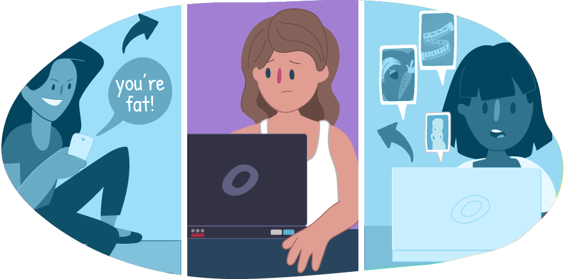

Effects of Cyberbullying |
||
The feeling of being laughed at or harassed by others, can prevent people from speaking up or trying to deal with the problem. In extreme cases, cyberbullying can even lead to people taking their own lives. Cyberbullying can affect us in many ways. But these can be overcome and people can regain their confidence and health. |
 | |